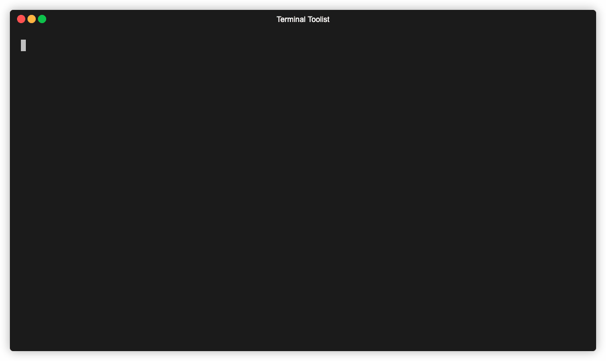
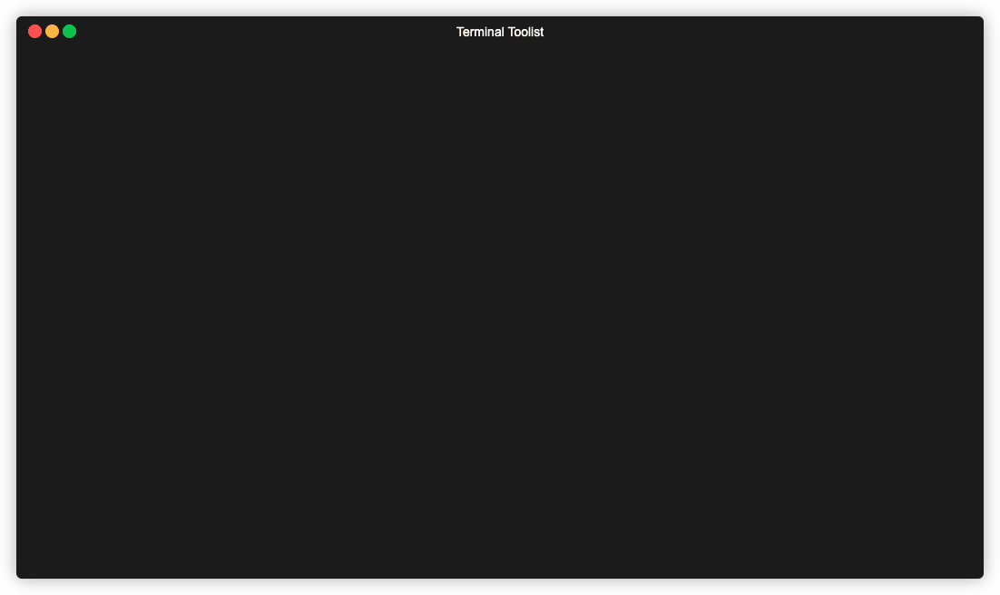
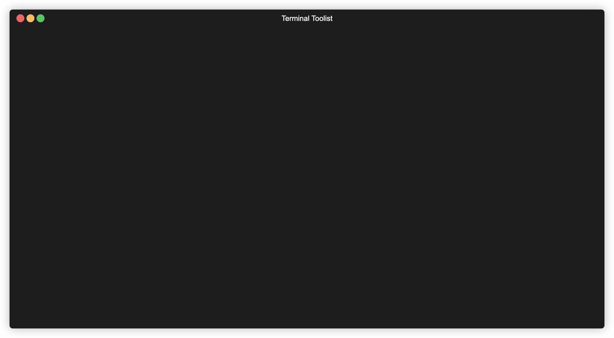
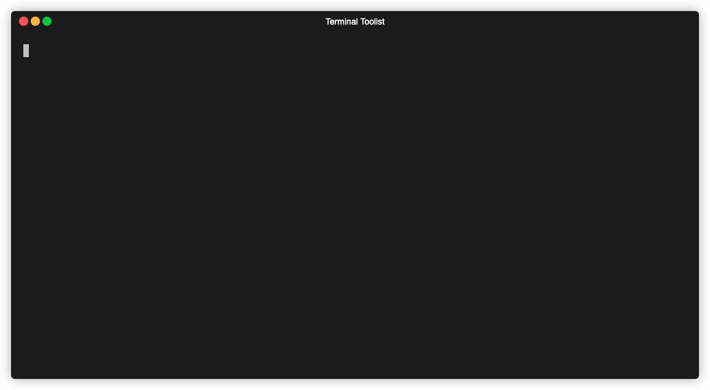
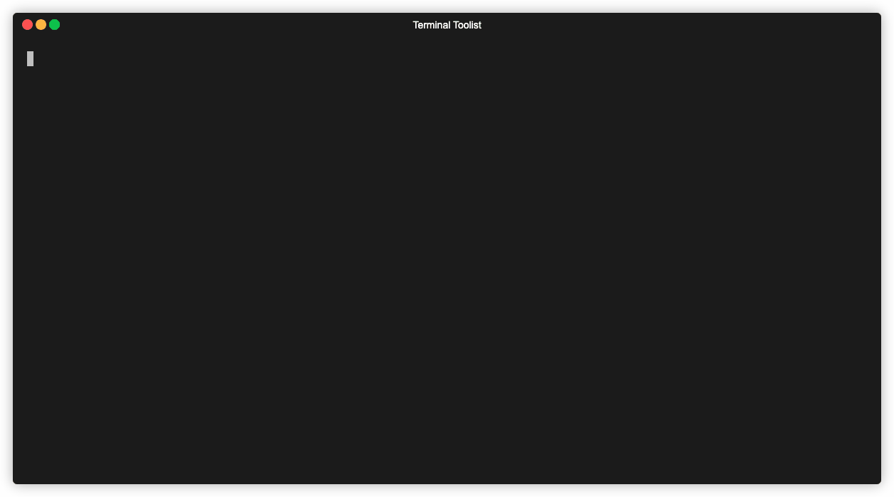
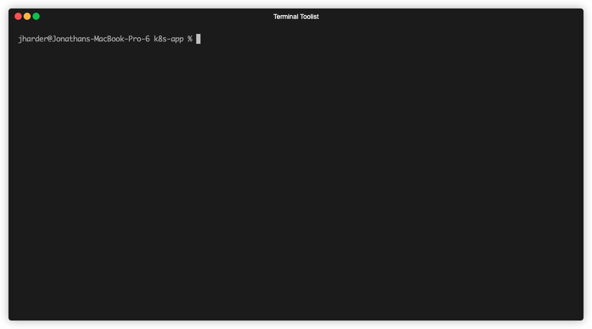

fzf - Terminal Tooling
Overview cli
Without any arguments or data piped from standard input fzf acts as a sort of interactive find by listing every file in the current and all sub-directories.

As you can see, the options are filtered live as you type. Spaces
start a new search term which can match any part of the file
regardless of the order you type them in. You can use ! to negate
a search term and filter out items which match that term.
Finding files
As you saw from above, the default behavior of fzf is already very powerful, but it can do much more. Some of the power comes from its ability to be composed with other shell commands.
Say you wanted to view the first handful of lines from a file. The kubernetes
file specification states the kind field must state what kind of resource
the configuration represents. Using head and a sub-shell running fzf,
we can combine the action of finding the file with the effect of getting
the head of it.
NOTE: in these examples I am using fish shell, so sub-shells are written
with (command), rather than the posix standard method of $(command).

You can also see in this example that you can move the selection up and down. Whichever item is selected when entered is pressed is printed to standard out.
Another useful combination of commands is opening the selected file in your editor of choice.
Fuzzy finding standard input
By itself fzf runs find internally and presents the results to filter. If provided with input through standard input, fzf then becomes a general purpose fuzzy filter.
As you can see, the content of the git branch command was used as input
which we can filter. Providing some additional flags to the git command
will give us more context to filter on:

This can be supercharged by taking the branch selection and running
git checkout on the branch1:
function fbr { local branches branch branches=$(git --no-pager branch -vv) branch=$(echo $branches | fzf) git checkout "$(echo $branch | awk '{print $1}' | sed 's/.* //')" }
This function grabs the list of git branches (with the additional
context provided by -vv), selects one with fzf, and then plucks
the branch name out of the selection (and then removing the * using sed).
With the branch name isolated, we run git checkout.
Using this, you have an interactive branch selection tool which gives you move information about the branches context.
Making a Better cd
If you know your way around find, you can supercharge other commands as well. Let's take a look at how we can improve the ergonomics of cd.
When at the root of a project with many nested folders, it can be a bit of a pain to cd into a folder deep in the project. You can either do it iteratively, running cd, inspecting the contents of the new directory, find the next folder, and run cd again. A slightly faster approach uses tab completion in order to drill into the target destination and only running cd once.
We can do better. Using find we can list all of the directories, recursively:
find . -type d ! \( -path '*/.git/*' -or -path '*/node_modules/*' \)
. ./frontend ./frontend/dist ./frontend/node_modules ./backend ./files ./.git ./kubernetes ./.idea
Using cd and a sub-shell running find piped to fzf gives you an interactive
cd command that can directly jump you to an arbitrarily deep folder by typing
the minimum necessary key to find it:2

Preview
Multiple selection
Fzf supports selecting multiple inputs and prints all selected items to standard out.
You can take this in a lot of directions.
For instance, you can install Homebrew packages via an interactive list of all available brew packages:
# (F)zf (B)rew (I)nstall # Takes input as a filter for brew search, # and installs all packages selected in a # loop. function fbi { local packages=$(brew search "$@" | fzf -m) if [[ $packages ]]; then for $package in $(echo $packages); do brew install $package done fi }

Shell integration
Fzf also comes with nice shell integration. When enabled, it hooks into zsh and bash completion engines (think of hitting tab and the list of files shows up). This means you get fzf wired into many common commands for free without the overhead of thinking about how to invoke it correctly.
NOTE: I'm running the following example in zsh because I couldn't get the shell integration to work in my normal shell (in case you were wondering why the prompt looks different).

But wait, there's more
And how much more there is! You can set custom headers, prompts, keybindings to run arbitrary code when pressing that key, switching which command feeds input to fzf on the fly. I don't have nearly enough time to go into it, but to see a taste of what it's capable take a look at this video.
I would also recommend crawling through the fzf wiki which has numerous examples of supercharging many applications.
Conclusion
Fzf is hard to not love. It feels like the sort of tool whose power is
only limited by my imagination. Once you start recognizing cases where
you need to pick out a single item from a list (killing a process from ps,
updating an OS service using systemctl, etc.) fzf steps up and makes
it interactive.
Give it a shot, let your imagination go wild. Filter on, friends.
Footnotes:
This example is taken from the fzf wiki. There are a lot of examples here, both for git and many other tools. It's a treasure trove of ideas and cool goodies.
In case you want to copy and paste, the command was:
cd (find . -type d ! \( -path '*/.git/*' -or -path '*/.node_modules/*' \) | fzf)
If you wanted, you could remove the path filtering from the find command and just
filter them out using fzf (!node !git), but this method reduces the noise you
have to look at when first running the command.